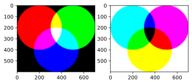

Q84：CMYK色空間
CMYKもnumpyやPillowで扱うことが可能である. CMYKは印刷でよく使われる色空間である.
numpy配列は単純にHxWx4の次元にしておけばよい. データ型はnp.uint8
Code
0.1 Q85：加法混色，減法混色
RGBはすべて255にすると白になるが，CMYKは黒になる.
Code
H, W = 600, 700
c_rgb = np.full((H, W, 3), 255, dtype = np.uint8)
c_cmyk = np.full((H, W, 4), 255, dtype = np.uint8)
idy, idx = np.indices((H, W))
m_circle1 = np.sqrt((idy - 200) ** 2 + (idx - 200) ** 2) <= 200
m_circle2 = np.sqrt((idy - 200) ** 2 + (idx - 500) ** 2) <= 200
m_circle3 = np.sqrt((idy - 400) ** 2 + (idx - 350) ** 2) <= 200
c_rgb [m_circle1, 0] = 0
c_cmyk[m_circle1, 0] = 0
c_rgb [m_circle2, 1] = 0
c_cmyk[m_circle2, 1] = 0
c_rgb [m_circle3, 2] = 0
c_cmyk[m_circle3, 2] = 0
# Kも255になっているのでマスクの部分は０にする
c_cmyk[m_circle1 + m_circle2 + m_circle3 > 0, 3] = 0
fig, axs = plt.subplots(1, 2)
axs[0].imshow(Image.fromarray(c_cmyk, "CMYK"))
axs[1].imshow(c_rgb)
0.2 Q86：CMYKのグラデーション
Code
Code
ret = []
for i in range(3):
j = (i + 1) % 3
x = np.zeros((256, 256, 3), dtype = np.uint8)
x[..., i] = np.arange(256).astype(np.uint8)[:, None]
x[..., j] = np.arange(256).astype(np.uint8)
# Kの部分を追加
x = np.concatenate([x, np.zeros((256, 256, 1), dtype = np.uint8)], axis = 2)
ret.append(np.array(Image.fromarray(x, "CMYK").convert("RGB")))
out = np.concatenate(ret, axis = 1)
plt.imshow(out)0.3 Q87：CMYKのくすみ
実際に印刷してみると，RGBから変換したCMYKはくすんだ印象を受ける.
Code
Code
0.4 Q88：カラープロファイルを埋め込んだ画像
カラープロファイルがあると，プロットでも，CMYKのくすみを再現できる.
詳細ははぶくが，ADbeからダウンロードする.
Code
0.5 Q92：スプライ補間と任意の曲線
Code
import scipy.interpolate
H, W = 400, 600
img = np.full((H, W, 3), 0, dtype = np.uint8)
points = np.array([
[0, 300],
[75, 399],
[175, 200],
[300, 300],
[470, 75],
[599, 165],
])
idy, idx = np.indices((H, W))
func = scipy.interpolate.interp1d(points[:, 0], points[:, 1], kind = "quadratic")
y_new = func(idx)
for border in [-100, -50, 0, 50, 150]:
mask = idy - y_new >= border
img[mask, 1:3] += 40
plt.imshow(img)0.6 Q93：二次元の補間
Code
import scipy.interpolate
H, W = 600, 700
img = np.full((H, W, 3), 0, dtype = np.uint8)
idy, idx = np.indices((H, W))
points = np.array([
[0, 300],
[75, 399],
[175, 200],
[300, 300],
[470, 75],
[599, 165],
])
# X, Y, R, G, Bになっている
# R, G, Bごとに補間を実行すること
data = np.array([
[0, 0, 0, 0, 0],
[0, 599, 0, 0, 0],
[699, 0, 0, 0, 0],
[699, 599, 0, 0, 0],
[200, 200, 255, 0, 0],
[500, 200, 0, 255, 0],
[300, 400, 0, 0, 255]
])
ret = []
for i in range(3):
x = data[:, 0]
y = data[:, 1]
z = data[:, 2+i]
func = scipy.interpolate.interp2d(x, y, z)
# メッシュグリッドは関数内でやってくれる
new_z = func(np.arange(H), np.arange(W))
ret.append(new_z)
img = np.clip(np.stack(ret, axis = 2), 0, 255).astype(np.uint8)
plt.imshow(img)
0.7 Q95：文字を入れる場所
画像に著作権表記などの文字を入れたい場合の処理.
文字は目立つところ，つまり，輝度の差が大きいところに入れる方がよいとする.
Code

Code
125 8000.8 Q96：なんかダサそうなロゴ
Code
Code
9 49 887 409Code
Code
0.9 Q97：ブレンドヲ変えてみる.
Code
def vividlight(img1, img2):
epsilon = 1e-8
layer1 = 1 - (1 - img1) / (2 * img2 + epsilon)
layer2 = img1 / (1 - 2 * (img2 - .5) + epsilon)
mask = img2 < .5
out = mask * layer1 + (1-mask) * layer2
out = np.clip(out, 0, 1)
return out
def overlay(i1, i2):
layer_1 = 2 * i1 * i2
layer_2 = 1 - 2 * (1- i1) * (1 -i2)
mask = i1 < .5
out = np.clip(mask * layer_1 + (1-mask) * layer_2, 0, 1)
return outCode
with Image.open("numpy_book/imgs/water.jpg") as img:
water = np.array(img) / 255.
H_w, W_w, _ = water.shape
canvas = Image.fromarray(np.full((3000, 3000), 255, dtype = np.uint8))
draw = ImageDraw.Draw(canvas)
font = ImageFont.truetype("numpy_book/fonts/M_PLUS_1p/MPLUS1p-Bold.ttf", 180)
draw.text((0, 0), "こしあんは\n美味しい", font = font, fill = 0)
text_arr = np.array(canvas)
y_pos, x_pos = np.where(text_arr == 0)
lx, ly, ux, uy = np.min(x_pos), np.min(y_pos), np.max(x_pos), np.max(y_pos)
text_arr = text_arr[ly:uy, lx:ux]
H_t, W_t = text_arr.shape
grad = np.full((H_t, W_t, 3), 255, dtype = np.uint8)
grad[..., 0] = np.linspace(-50, 50, W_t)[None, :].astype(np.uint8)
grad[..., 1] = 160
grad = np.array(Image.fromarray(grad, "HSV").convert("RGB"))
m = text_arr == 0
grad = m[..., None] * grad
delta_h = (H_w - H_t) // 2
delta_w = (W_w - W_t) // 2
grad = np.pad(
grad / 255.,
# 軸後ごとに，前後にどれだけ足すのかを記述する
((delta_h, delta_h), (delta_w, delta_w), (0, 0,)),
"constant",
constant_values = 0.
)Code
0.10 Q98:写真がないページの判定
0.11 Q99：白黒画像の除外.
0.12 Q100：モザイク
モザイクをかけるには低解像度にしてもとの写真に戻すということをすれば良い.
Pillowは(x, y)の順番であることに注意すること.